Configuración de Lista de Precios Base
Ubique y seleccione en el menú de ADempiere, la carpeta “Gestión de Materiales”, luego seleccione la carpeta “Reglas de Gestión de Materiales”, por último seleccione la ventana “Lista de Precios”.
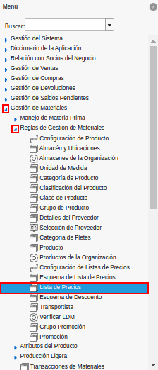
Imagen 1. Menú de ADempiere
Podrá visualizar la ventana “Lista de Precios”, con todos los registros de listas de precios de compras y ventas.
Imagen 2. Ventana Lista de Precios
Warning
La información de los campos que contiene la pestaña “Lista de Precios”, no debe ser modificada por ningún motivo. De igual manera, no se debe tildar o destildar ningún check de los que contiene dicha pestaña.

Ubique el registro de lista de precios de “Ventas (USD)”.
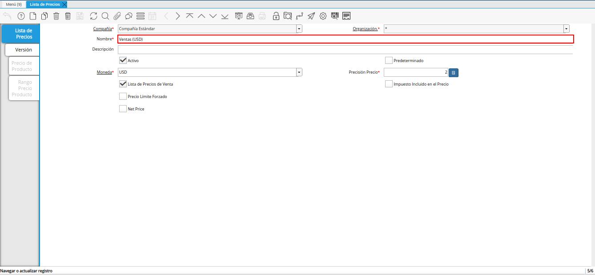
Imagen 3. Lista de Precios Ventas (USD)
Seleccione la pestaña “Versión”, para crear la versión de lista de precios base.
Imagen 4. Pestaña Versión
Seleccione el icono “Registro Nuevo”, ubicado en la barra de herramientas de ADempiere.
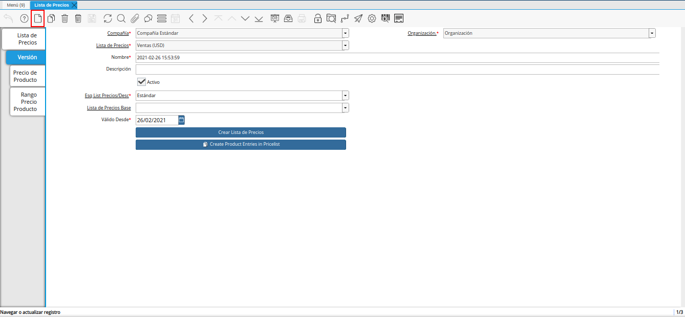
Imagen 5. Icono Registro Nuevo
Seleccione en el campo “Organización”, la organización para la cual se encuentra realizando el registro.
Imagen 6. Campo Organización
Note
La organización seleccionada en la lista de precios, debe coincidir con la organización seleccionada en la tasa de cambio creada a la fecha. Si la lista de precios esta creada con organización (*), las tasas de cambio a utilizar deben estar creadas con organización (*).

Introduzca en el campo “Nombre”, el nombre correspondiente a la versión de lista de precios que se encuentra creando.
Este campo contiene como nombre por defecto, la fecha y la hora en el cual fue creado el registro.
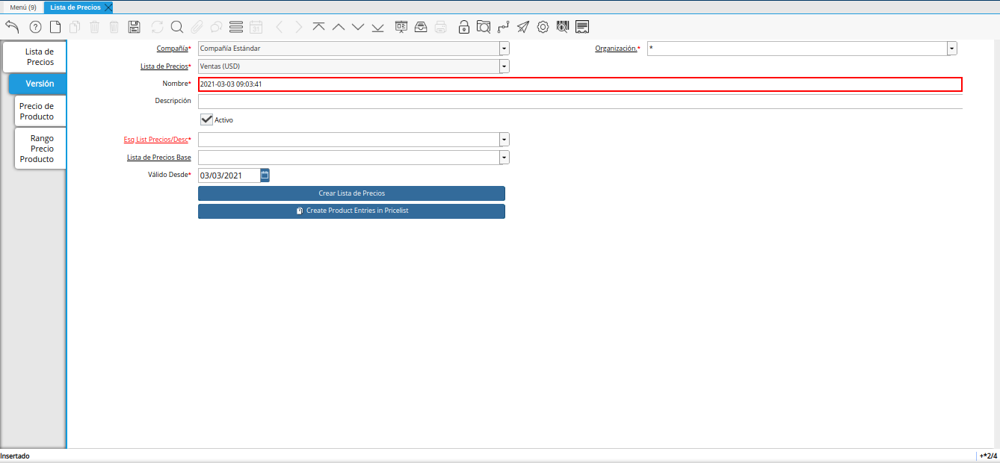
Imagen 7. Campo Nombre
Introduzca en el campo “Descripción”, una breve descripción correspondiente al registro que se encuentra realizando.
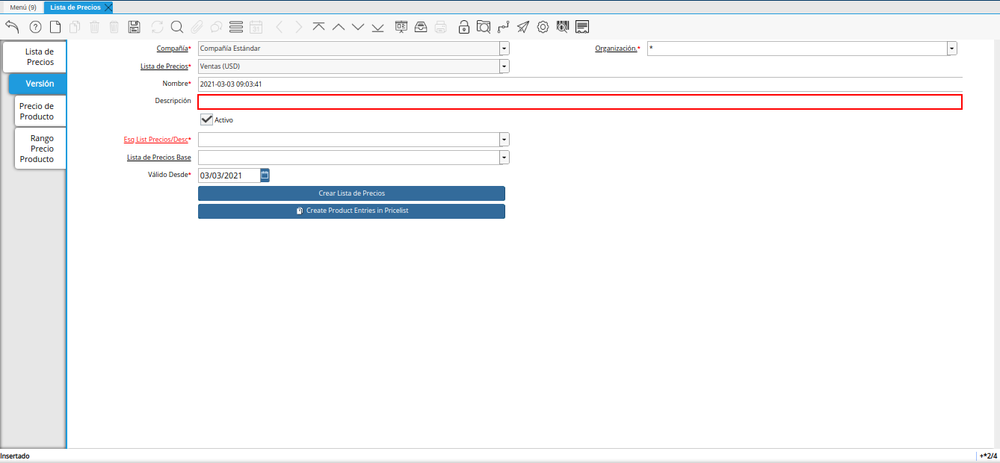
Imagen 8. Campo Descripción
Seleccione en el campo “Esq List Precios/Desc”, el esquema de descuento correspondiente.
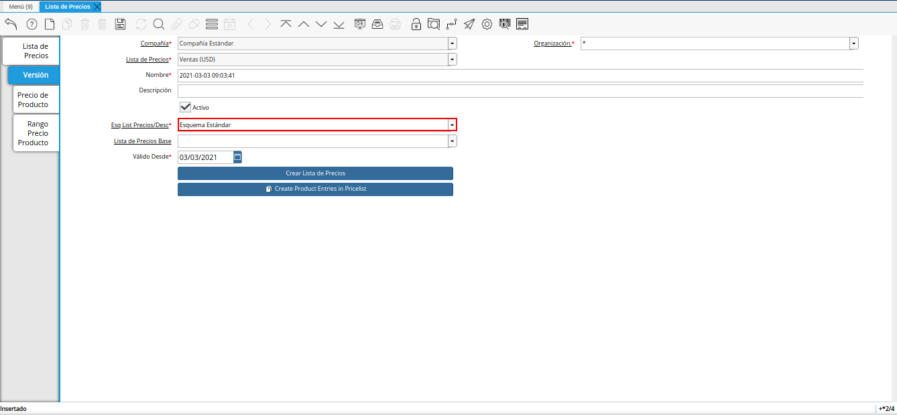
Imagen 9. Campo Esq List Precios/Desc
Seleccione en el campo “Válido Desde”, la fecha de inicio del periodo de validez del registro que se encuentra realizando.
Imagen 10. Campo Válido Desde
Seleccione el icono “Guardar Cambios”, ubicado en la barra de herramientas de ADempiere.
Imagen 11. Icono Guardar Cambios
Note
Para cargar los precios de los productos en la lista de precios base, puede realizar desde la opción “Crear Lista de Precios”, o de manera manual desde la pestaña “Precio del Producto”.
Crear Precios desde Crear Lista de Precios
Para cargar los precios de los productos desde la opción “Crear Lista de Precios”, debe realizar lo siguiente.
Esta opción permite crear los precios de los productos desde la última orden de compra procesada, basandose en el tipo de conversión, descuento y margen de ganancia, previamente configurado en el esquema de descuento.
Si los precios de los productos se encuentran en una moneda diferente a la moneda de la compañía, ADempiere toma los precios de la pestaña “Compras” de cada producto y en base a la moneda que este asociada a dicha pestaña y a la moneda de la lista de precios, toma la configuración del esquema de lista de precios, realizando la conversión a la tasa de la fecha que tenga la versión de lista de precios y aplica el descuento o margen de ganancia configurado en el mismo (si lo tiene), para finalmente cargar dichos precios a la lista de precios.
Seleccione la opción “Crear Lista de Precios”.
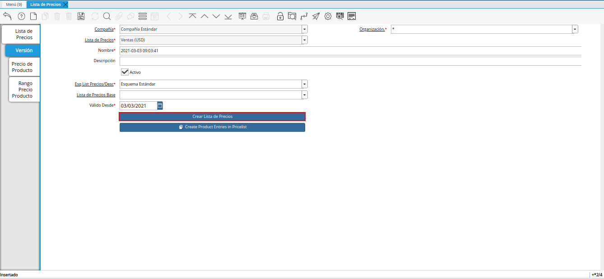
Imagen 12. Opción Crear Lista de Precios
Note
También puede acceder al proceso, seleccionando la opción “Crear Lista de Precios” desplegada del icono “Proceso ubicado en la barra de herramientas de ADempiere.
Podrá visualizar la ventana “Crear Lista de Precios”, con diferentes campos que permiten generar la lista de precios en base a lo requerido por el usuario.
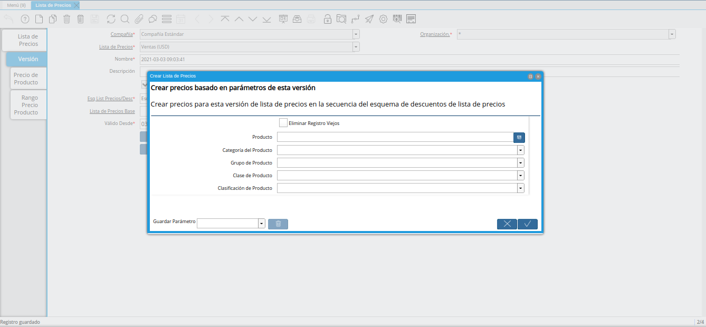
Imagen 13. Ventana Crear Lista de Precios
Seleccione en el campo “Producto”, el producto por el cual requiere generar la lista de precios.
Si no es seleccionado ningún valor en este campo, se genera la lista de precios con todos los productos.
Imagen 14. Campo Producto
Seleccione en el campo “Categoría del Producto”, la categoría del producto por la cual requiere generar la lista de precios.
Si no es seleccionado ningún valor en este campo, se genera la lista de precios con todas las categorías de productos.
Imagen 15. Campo Categoría del Producto
Seleccione en el campo “Grupo de Producto”, el grupo de producto por el cual requiere generar la lista de precios.
Si no es seleccionado ningún valor en este campo, se genera la lista de precios con todos los grupos de productos.
Imagen 16. Campo Grupo de Producto
Seleccione en el campo “Clase de Producto”, la clase de producto por la cual requiere generar la lista de precios.
Si no es seleccionado ningún valor en este campo, se genera la lista de precios con todas las clases de productos.
Imagen 17. Campo Clase de Producto
Seleccione en el campo “Clasificación de Producto”, la clasificación por la cual requiere generar la lista de precios.
Si no es seleccionado ningún valor en este campo, se genera la lista de precios con todas las clasificaciones de productos.
Imagen 18. Campo Clasificación de Producto
Seleccione la opción “OK”, para ejecutar el proceso y generar la lista de precios en base a lo seleccionado.
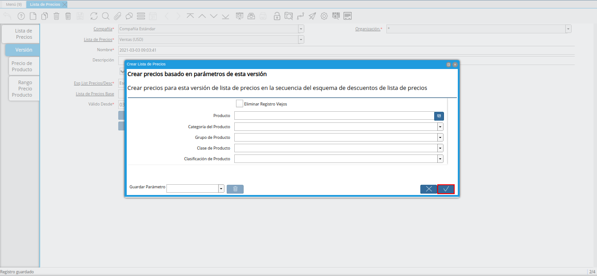
Imagen 19. Opción OK
Note
Para verificar los precios de los productos puede seleccionar la pestaña “Precio de Producto”, de la ventana “Lista de Precios”, de la versión previamente creada.


Crear Precios desde Pestaña Precio de Producto
Para cargar los precios de los productos de manera manual, debe realizar lo siguiente.
Seleccione la pestaña “Precio de Producto” y proceda a llenar los campos correspondientes.
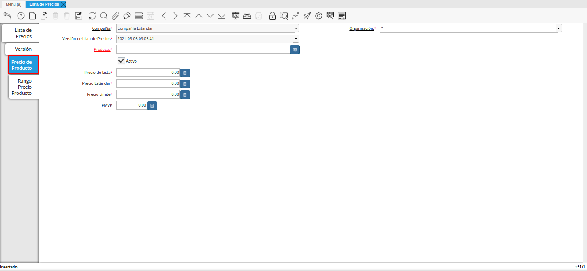
Imagen 20. Pestaña Precio del Producto
Seleccione en el campo “Producto”, el producto correspondiente al registro.
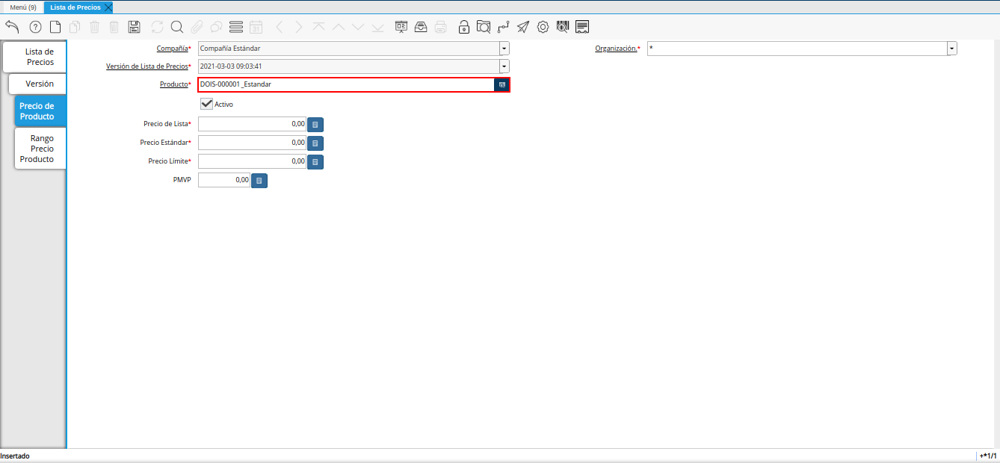
Imagen 21. Campo Producto
Introduzca en el campo “Precio de Lista”, el precio de lista del producto.
El precio de lista es el precio de lista oficial en la moneda del documento.
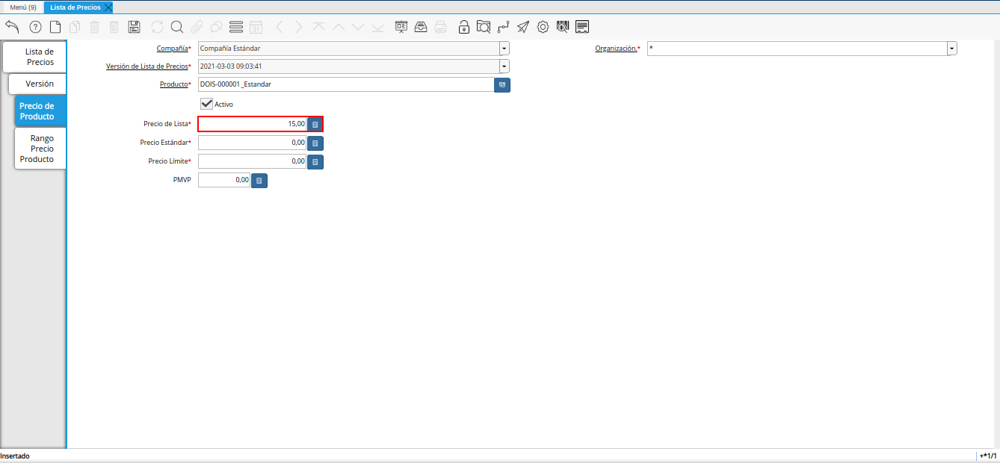
Imagen 22. Campo Precio de Lista
Introduzca en el campo “Precio Estándar”, el precio estándar del producto.
El precio estándar indica el precio estándar o normal para un producto en esta lista de precios.
Imagen 23. Campo Precio Estándar
Introduzca en el campo “Precio Límite”, el precio límite del producto.
El límite de precio indica el precio más bajo para un producto establecido en la moneda de la lista de precio.
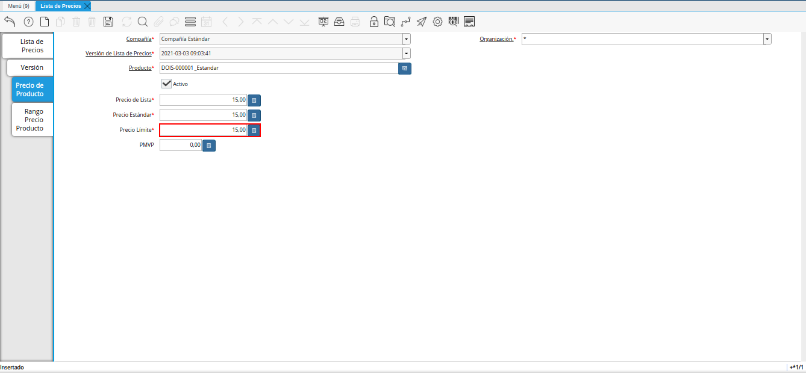
Imagen 24. Campo Precio Límite
Introduzca en el campo “PMVP”, el PMVP del producto.
El PMVP indica el precio marcado de venta al público.
Imagen 25. Campo PMVP
Seleccione el icono “Guardar Cambios”, ubicado en la barra de herramientas de ADempiere.
Imagen 26. Icono Guardar Cambios